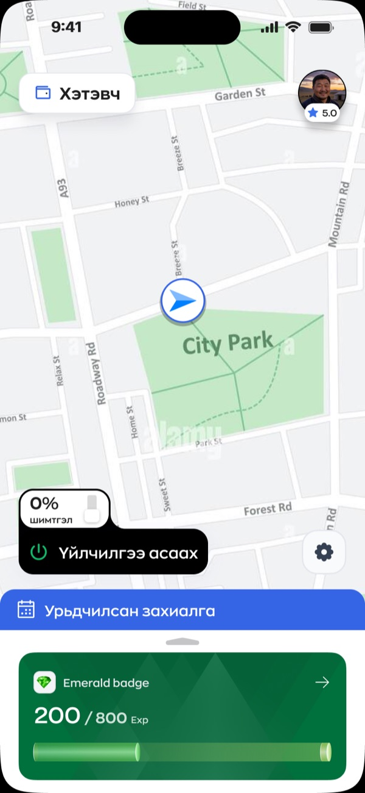
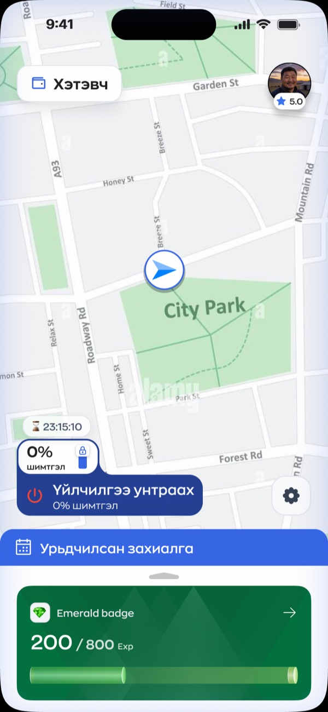
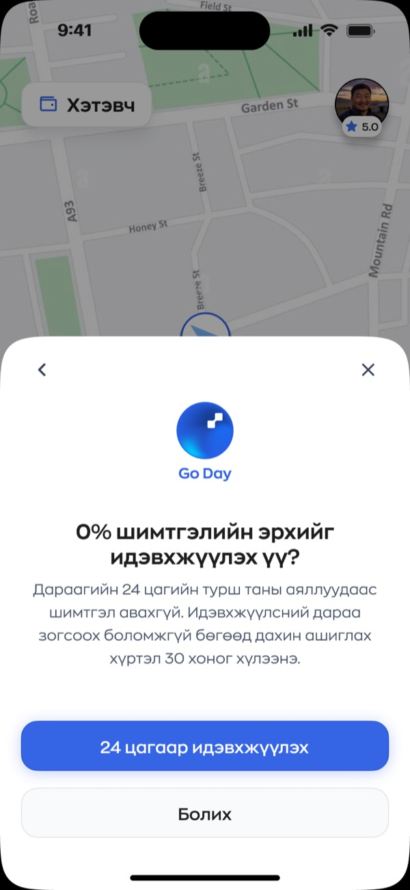
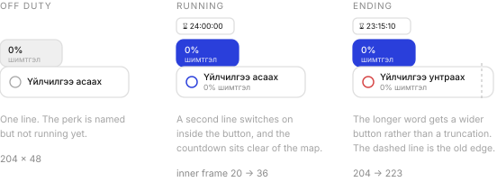
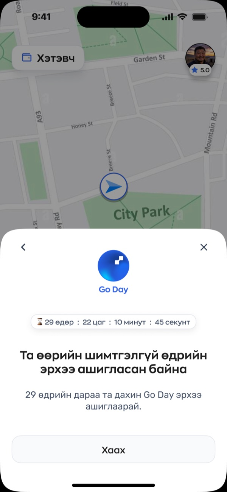
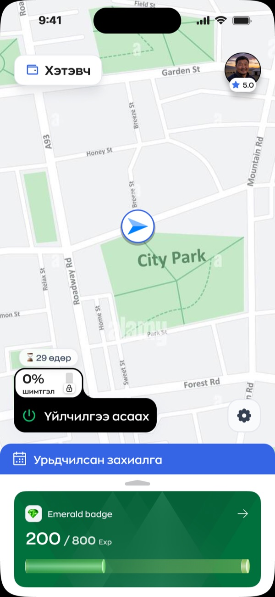
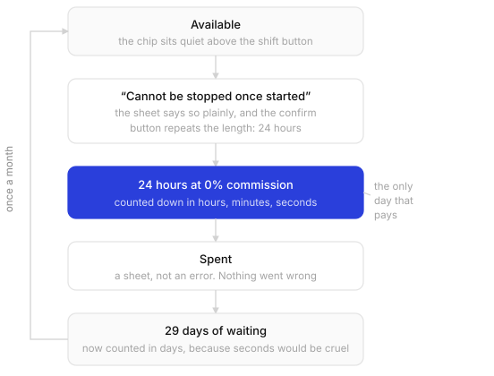

Tino Day feature in Tino Driver
2026
Drivers pay Tino a commission on every fare they take. Tino Day hands one of those days back. Twenty four hours at zero percent, once every thirty days, and the driver picks which day it lands on.1
Where a perk has to live
A driver opens this app to do one thing. Go online. That button is the busiest control in the entire product, and everything else on the screen is arranged around it.
So I welded the perk to it. In the file the 0% chip and the shift button are joined by a single boolean union, 204 by 92 points. They are not two controls that happen to sit near each other. I made them one shape.3 A driver cannot start a shift without their free day sitting right there under their thumb.
That was my whole placement argument. A perk in a menu is a perk nobody uses, and a driver who never finds the thing you gave them is a driver who never feels paid back.


One tap you cannot take back
Activation is permanent, and I put that in the sheet’s second sentence rather than burying it. No commission for the next 24 hours. Once started it cannot be paused, and the next one is 30 days away.
I made the confirm button repeat the length. Not “Confirm”, not “Activate”, but activate for 24 hours. Someone reading fast still walks away with the number in their head.

A perk that feels like a trick costs more trust than it ever buys.
A badge, not a banner
Once the day starts, a countdown appears. I made it a 26 point badge tucked above the shift button, not a banner across the top of the screen.
That sounds like a small call and it decides whether the whole feature is bearable. A driver looks at this map for ten hours straight. Anything covering it gets in the way of the job. The badge takes a strip of space that was empty anyway and returns the one number the driver actually wants, which is how much of the good day is left.
The button grows while the day runs
I made the control change shape three times, and each change does a job.

Off duty it shows a single line. The words 0% commission exist inside the button but sit switched off in the file. Nothing is running, so nothing claims to be.
While the day is live those words switch on and the inner frame grows from 20 points to 36. The control gets taller for as long as the benefit lasts.
Then the label flips from асаах to унтраах, which is the longer word, so I widened the button from 204 to 223 points. I could have truncated it, dropped the type size, or left it overflowing. I resized the button. Nobody will ever thank me for that, which is how I know it was right.
Days, not seconds
I did not keep the countdown in the same unit the whole way round.
While the day runs it reads 24:00:00, then 23:15:10. Hours, minutes and seconds, because at that scale every hour on the clock is money.
Once the day is spent, I switch the badge to 29 өдөр. Days. Watching a month tick down second by second on your home screen would be a small daily punishment, and the driver did nothing wrong. They used a thing they had earned.


I closed the sheet with a single button that says Close. No upsell, no offer to buy more days, no invitation to refer a friend for another one. It tells you when to come back and it gets out of the way.

The trade-off I keep coming back to
Here is the trade-off I keep coming back to.
A 24 hour window that cannot be paused is an argument for driving straight through it. If today is the only day this month where you keep every tugrik, the rational move is to stay out as long as your body allows. My design does not invent that pressure. It does concentrate it into one stretch, and then it puts a clock on the screen counting the pressure down.
The reward is real and I still think the shape deserves another round. An incentive that pays best when you sleep least is worth a second look, whoever it came from.
Other shapes are not hard to picture, and I have sketched them. The same allowance spent as hours across the month rather than one unbroken block. A pause. A cap on how many hours the perk covers in a single stretch. Any of those keeps the reward and removes the reason to drive tired.4
- These are design files rather than production screenshots. The ratings, badges and timer values are placeholder data chosen to exercise the layout.
- The file calls this Go Day and the wordmark on both sheets says Go Day. It reaches me as Tino Day. Worth settling before anything ships, because drivers will use whichever name they see first and support will inherit the other one.
- Every measurement here comes straight off the Figma file. The union is 204 by 92, the button 203.8 by 48, and the widened version 222.8, which I have rounded throughout.
- Writing a concern into a case study about your own work is a slightly odd thing to do. I would rather have it here than find out later that nobody in the room said it.